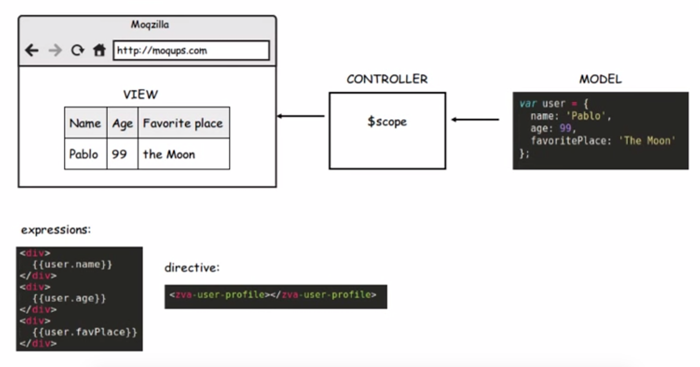
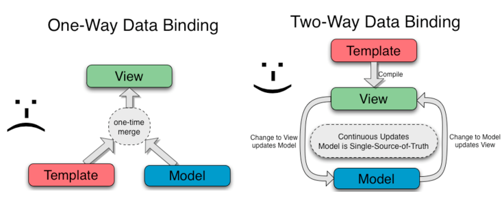

Model - Data which is used merged with the template to produce the view.
View - Is what users sees.
Controller - Is the code behind the view. Contruct the model and publish it to the view along with callback methods.

Core Features
Data-binding - It is the automatic synchronization of data between model and view components.

Scope - These are objects that refer to the model. They act as a glue between controller and view.
Directives - Directives are markers on DOM elements such as elements, attributes, css, and more. These can be used to create custom HTML tags that serve as new, custom widgets. AngularJS has built-in directives such as ngBind, ngModel, etc.
Dependency Injection -
Directives
ng-app - Declares an element as a root element of the application allowing behavior to be modified through custom HTML tags
ng-bind - Automatically changes the text of a HTML element to the value of a given expression
ng-model - Similar to ng-bing, but allows two-way data binding between the view and the scope
ng-repeat - Instantiate an element once per item from a collection
ng-repeat - Instantiate an element once per item from a collection
Advantages
It provides data binding capability to HTML. Thus, it gives user a rich and responsive experience.
AngularJS code is unit testable.
AngularJS provides reusable components.
With AngularJS, the developers can achieve more functionality with short code.
In AngularJS, views are pure html pages, and controllers written in JavaScript do the business processing.
Disadvantages
If the user of your application disables JavaScript, then nothing would be visible, except the basic page
Terrible documentation, you have to google a lot of information.